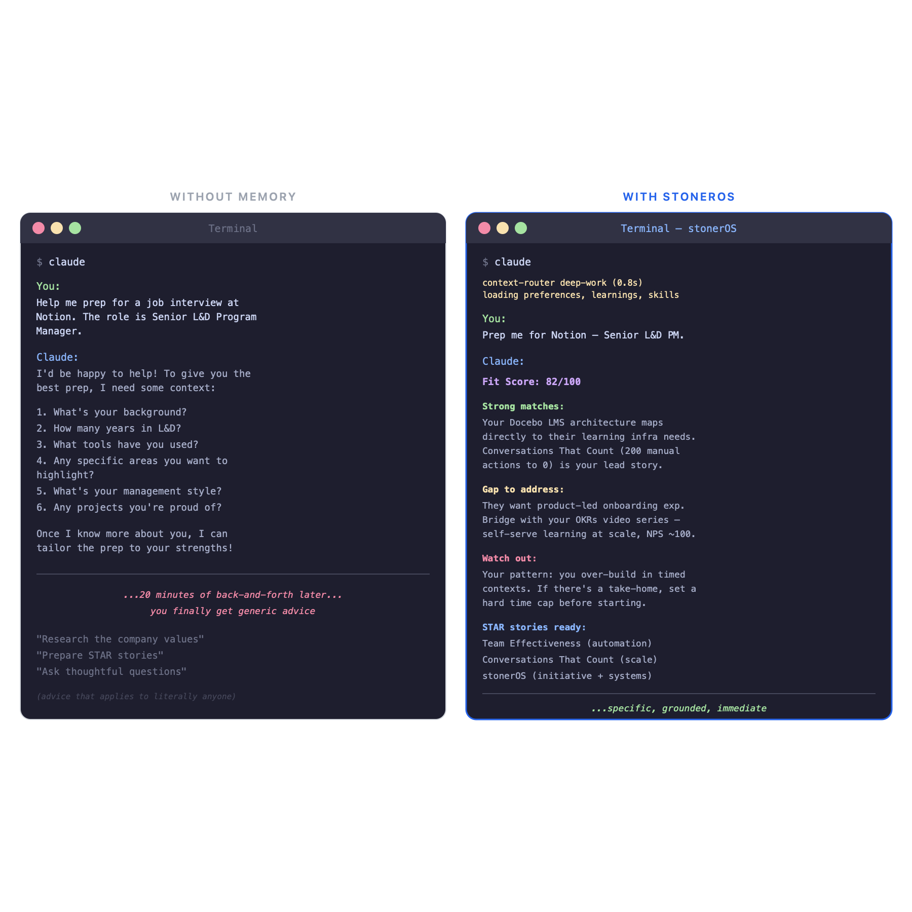
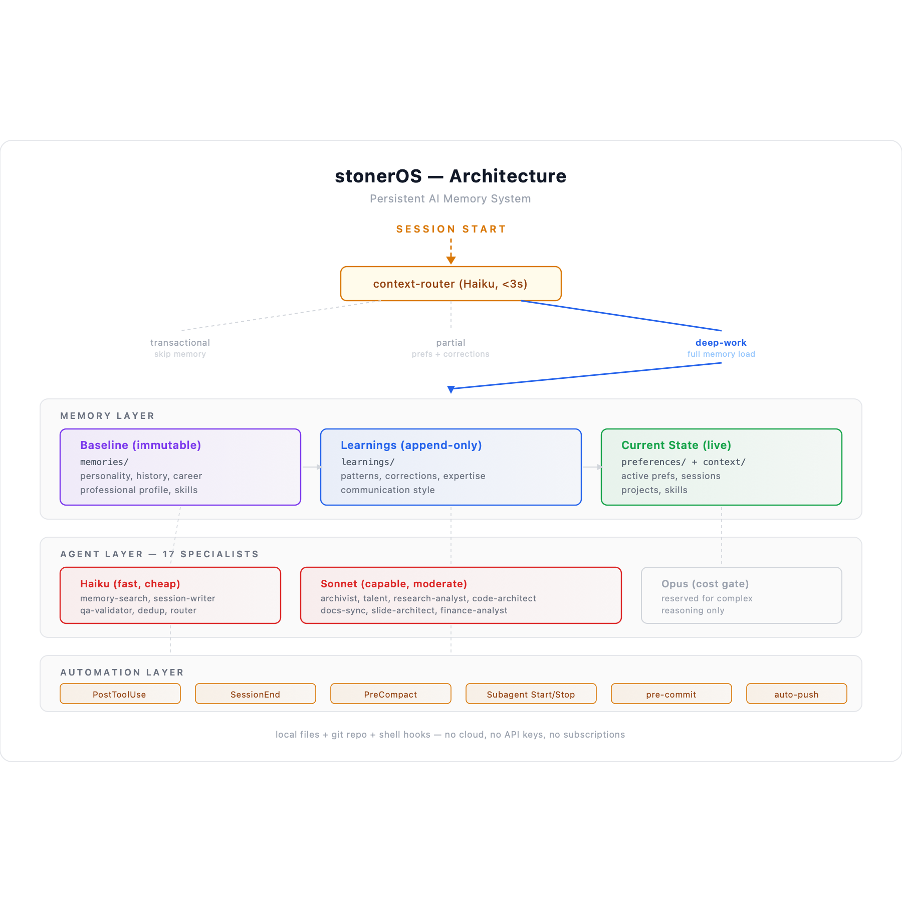

Every conversation with an AI starts the same way: from zero.
It doesn't matter that you spent three hours last Tuesday mapping out your project architecture. It doesn't matter that you told it your communication preferences, your tech stack, your career history. It doesn't matter that it gave you genuinely good advice based on everything it knew about you. Close the window, open a new one, and you're strangers again.
I got tired of introducing myself.
What I Built
In February 2026, a few months after getting laid off, I started building what I call stonerOS — a persistent memory system for Claude. Not a wrapper. Not a chatbot. A structured knowledge layer that gives an AI assistant a durable understanding of who I am, what I'm working on, and how I think.
The system lives in a folder on my laptop. It's a git repo. Every session Claude runs, it reads a core instruction file that loads my preferences, my behavioral patterns, my active projects, and my career context. When something new is learned — a correction, a preference, a pattern — it gets written to the appropriate file and committed. The next session picks up where the last one left off.
Here's what it looks like in practice:
- I open a new Claude session and ask it to help me prep for a job interview. It already knows my resume, my portfolio, my past interview feedback, and which companies I've applied to. No preamble needed.
- I ask it to review a piece of writing. It already knows I don't want flattery, that I prefer direct feedback, and that I catch overclaiming language instinctively. It adjusts.
- I run a slash command —
/job-prep— and it scores a job posting against my actual skill inventory, professional history, and career goals. Not generic advice. Advice grounded in my context.
None of this is magic. It's just files, conventions, and a few automation hooks. But the cumulative effect is something I didn't expect: the AI stopped feeling like a tool and started feeling like infrastructure.

The Architecture (One Paragraph Version)
Three memory layers: an immutable baseline (who I am, my history, my personality), an append-only learnings layer (corrections, patterns, expertise that evolve), and a current-state layer (active preferences, live projects, recent sessions). Seventeen specialized agents handle different jobs — searching memory, writing session logs, validating outputs, auditing documentation, coaching career strategy. Each agent runs on the cheapest model that can do the job well. Five automation hooks fire on file changes, session ends, and context compression events. Two git hooks block secrets and auto-push backups. Everything version-controlled, everything recoverable.

That's the skeleton. The interesting part is what I learned building it.
Five Things Nobody Told Me
1. Background agents fail silently.
I learned this the hard way. Claude Code lets you run agents in the background — fire off a task and keep working. Useful in theory. In practice, background agents can complete without producing any output and without throwing an error. The task just… finishes. You check for the output file and it isn't there. No log entry, no error message, nothing.
The fix was a policy decision: high-stakes writes always run in the foreground. Background mode is for tasks where silent failure is acceptable. Not a code fix — an architecture decision driven by observed behavior.
2. Parallel hooks cause write races.
When a session ends, a hook fires to finalize the session log. When subagents close, the same hook fires again. Five subagents closing means five hook invocations writing to the same file simultaneously. The result: duplicate blocks, conflicting state, corrupted session files.
The fix wasn't a mutex or a queue. It was a design constraint: one designated agent owns all writes to the learnings directory. Period. No locking mechanism needed because there's only one writer. The simplest concurrency solution is eliminating concurrency.
3. Your AI will learn things about you that surprise you.
After a month of accumulated session data, the system started surfacing patterns I hadn't articulated to myself. That I build infrastructure before I build the thing I actually need — and that this is a strength with runway but a risk with deadlines. That I lose engagement the moment work cycles back to already-solved problems. That I instinctively catch overclaiming in my own writing but chronically underclaim the scale of my automation work.
These aren't insights the AI generated from nothing. They emerged from the accumulated evidence of dozens of sessions. The memory system didn't make Claude smarter — it gave it enough data to be observant.
4. The cheapest model is usually the right one.
I run three model tiers: Haiku (fast, cheap), Sonnet (capable, moderate), and Opus (expensive, reserved). My instinct was to run everything on the best model. The reality: Haiku handles memory search, session logging, output validation, and deduplication just fine. Sonnet handles research, career coaching, code generation, and documentation. Opus is a cost gate, not a quality upgrade.
The lesson generalizes beyond this system: most AI tasks don't need the most powerful model. They need the right model for the complexity of the task. Routing saves money without sacrificing quality.
5. Documentation rots faster than code.
I built comprehensive docs on day one. By day twelve, they were wrong. Agent counts were stale, slash command lists were incomplete, architecture descriptions referenced features that had been redesigned. The system was evolving faster than I could manually update the docs about the system.
The fix was a /docs-sync command that compares documentation against the actual repo state and patches the gaps. The meta-lesson: if your system changes frequently, documentation needs to be a process, not a deliverable.
Why I'm Writing This
I spent ten years in Learning & Development. I've designed curriculum for thousands of people, built automation systems that ran for years without maintenance, and shipped learning programs with measurable impact. When I started building stonerOS, I wasn't trying to create a product. I was trying to solve a problem: AI without memory is a tool; AI with memory is a partner.
But the more I built, the more I realized: the discoveries I was making — about agent design, memory architecture, automation patterns, failure modes — weren't documented anywhere. Not in Anthropic's docs. Not in blog posts. Not in the Claude Code community. Because most people using AI aren't building persistent systems. They're having conversations.
I wanted to change that. Not by telling people what to build, but by showing what happened when I did — the decisions, the mistakes, and the moments where the system started surprising me.
What's Ahead
The shift from stateless conversations to persistent context, and what it actually feels like week by week.
How I organized files, naming conventions, and a three-tier architecture that keeps things from turning into a junk drawer.
The moment the system went from "files Claude reads" to "a team that works for me" — building a specialized sub-agent on the cheapest model possible.
Hooks, scheduled tasks, and the moment I stopped manually maintaining the system and let it maintain itself.
Write races, silent failures, documentation rot, and the design decisions that came from getting it wrong first.
I built stonerOS because I got tired of starting over. The system I have now isn't perfect, but it remembers. And that changes more than I expected.